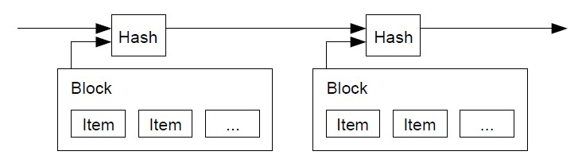
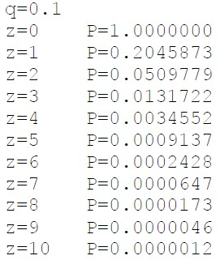

L'Abstract :
Un Cash purement électronique pourrait permettre des paiements en ligne sans tiers de confiance
ou institutions financière. Pour celà, il est intéressant de s'intéresser au principe de signature
électronique. Les bénéfices de celle-ci sont perdu quand un tiers parti s'occupe du problème lié à la
double dépense. Le principe de Bitcoin est de répondre au problème de la double dépense via un réseau
de paires-à-paires.
Le réseau Horodate les transactions en les "hashant" dans une chaîne contine de Preuve de Travail basé
sur le Hachage. Ceci forme un enregistrement qui ne peut pas être modifié sans preuve de travai.
La plus longue des chaîne ne sert pas seulement à prouver la séquence des événements observés mais est aussi
la preuve que les éléments sont issues de l'ensemble des pool CPU. Tant que la majorité de la
puissance de calcul de la pool collabore pour ne pas attaquer le réseau, ils généreront la plus longue
chaîne qui ne pourra pas être attaquée. Ainsi, le réseau nécessite une structure minimum (>51% de la force de calcul)
Les Messages sont diffusés dans la mesure du possible et les noeuds du systèmes peuvent rejoindre et quitter
le réseau à volonté en acceptant la plus longue chaîne de preuve de travail comme preuve de ce qui s'est passé en leurs abscence.
1. Introduction
Le commerce sur le net repose quasi exclusivement sur les institutions financières comme étant des
tiers de confiance pour procéder aux paiements électroniques. Ceci pose un problème si nous ne faisons
pas confiance aux tiers ou si nous ne pouvons pas leurs faire confiance. Les problèmes de médiations
entre les individus font qu'il n'est pas possible de créer des transactions non réversibles. Le coût
des médiations augmente les frais de transactions et la possibilité d'effectuer de petits frais occasionnelles.
Il existe un coût plus important lié à la perte de capacité de faire des paiements non réversibles pour des services
non réversibles. Avec la possibilité d’un "retour en arrière bancaire", le besoin de confiance s’étend.
Les commerçants doivent se méfier de leurs clients, les harceler et obtenir de leurs parts, plus d’informations
qu’ils en auraient normalement besoin. Un certain pourcentage de fraude est considéré inévitable.
Ces coûts et incertitudes de paiement peuvent être évités en utilisant la monnaie physique, mais il
n’existe aucun mécanisme pour effectuer des paiements sur un canal de communication sans un tiers de confiance.
Ce qui semble nécessaire pour palier à ce problème est un système de paiement électronique basé sur la preuve
cryptographique au lieu de la confiance. Ceci permet des transactions paires-à-paires sans tiers de confiance.
Les transactions sont impossible à inverser sur le plan informatique et permettent de :
- Protéger les vendeurs contre la fraude
- Protéger les acheteurs contre les intrusions dans la vie privée à l'aide de logiciels prouvant sa bonne foie.
Dans ce document, nous proposons une solution au problème de la double dépense en utilisant un serveur d’horodatage
distribué de pair-à-pair pour générer une preuve informatique de l’ordre chronologique des transactions.
Le système est sécurisé tant que les noeuds honnêtes contrôlent collectivement plus de puissance CPU
que n’importe quel groupe coopérant de noeuds attaquants.
2. Transactions
Nous pouvons définir une pièce électronique comme une chaîne de signatures numériques. Chaque propriétaires transfère
la pièce au suivant en signant numériquement le hash de la transaction précédente et la clé publique du propriétaire suivant
en les ajoutant à la fin de la "pièce". Ainsi, un propriétaire peut vérifier les signatures et vérifier la chaîne de propriété.
Le problème est que le bénéficiaire ne peut pas vérifier que l’un des propriétaires n’a pas dépensé la pièce en double.
Une solution commune est d’introduire une autorité centrale de confiance, ou monnaie, qui vérifie chaque transaction pour les
doubles dépenses. Après chaque transaction, la pièce doit être retournée à la Monnaie royale pour émettre une nouvelle pièce, et
seules les pièces émises directement par la Monnaie royale sont réputées ne pas avoir été dépensées en double.
Le problème avec cette solution est que le sort de tout le système monétaire dépend de l’entreprise qui dirige la monnaie,
chaque transaction devant passer par eux, tiers de confiance.
Il faut un moyen que bénéficiaire sache que les anciens propriétaires n’ont signé aucune transaction antérieure.
Nous considérons alors que la première transaction est celle qui compte. Nous ne nous soucions alors pas des tentatives
ultérieures de double dépense. Afin de confirmer l’absence d’une transaction, il faut être au courant de toutes les transactions.
Dans le modèle fondé sur la monnaie, la monnaie était au courant de toutes les transactions et décidait laquelle arrivait en premier.
Pour ce faire, les transactions doivent être annoncées publiquement [1], et nous avons besoin d’un système permettant aux participants
de s’entendre sur un seul historique de l’ordre dans lequel elles ont été reçues. Le bénéficiaire a besoin d’une preuve qu’au moment de
chaque transaction, la majorité des noeuds ont convenu qu’il s’agissait du premier reçu.
3. Un serveur Horodaté
La solution que nous proposons commence par un serveur d’horodatage. Un serveur d’horodatage fonctionne en prenant
un hash d’un bloc d’éléments à horodater et en publiant largement le hashage, comme dans un journal ou une publication Usenet [2-5].
L’horodatage prouve que les données doivent avoir existé à l’époque, afin de pouvoir entrer dans le hachage.
Chaque horodatage inclut l’horodatage précédent dans son hachage, formant une chaîne, chaque horodatage supplémentaire renforçant ceux qui le précédént.

4. La preuve de Travail
Pour implémenter un serveur d'horodatage distribué sur une base paires-à-paires, nous devrons utiliser un système de
preuve de travail similaire au Hashcash [6] d'Adam Back, plutôt que les articles de journaux ou Usenet de la monnaie.
La preuve de travail implique la recherche d'une valeur qui, lorsqu'elle est hachée avec un SHA-256, nous avons le hachage qui commence
par un certain nombre de bits "zéro". Le travail moyen requis est exponentiel au nombre de bits "zéro" requis et peut être vérifié en exécutant un seul hachage.
Pour notre réseau d'horodatage, nous implémentons la preuve de travail en incrémentant un
nonce dans le bloc jusqu'à ce qu'une valeur soit trouvée
qui donne au hachage du bloc les bits "zéro" requis. Une fois que l'effort CPU a été dépensé pour faire satisfaire
la preuve de travail, le bloc ne peut pas être modifié sans refaire le travail.
Comme les blocs ultérieurs sont enchaînés après celui-ci, le travail de modification du bloc comprendrait la refonte de tous les blocs après celui-ci.
 La preuve de travail résout également le problème de la détermination de la représentation dans la prise de décision à la majorité.
Si la majorité était basée sur une adresse IP, un vote, elle pourrait être renversée par toute personne capable d'allouer de
nombreuses adresses IP.
La preuve de travail résout également le problème de la détermination de la représentation dans la prise de décision à la majorité.
Si la majorité était basée sur une adresse IP, un vote, elle pourrait être renversée par toute personne capable d'allouer de
nombreuses adresses IP.
La preuve de travail est représentable par : un processeur, un vote.
La décision majoritaire est représentée par la chaîne la plus longue, qui a investi le plus grand effort de preuve de travail.
Si la majorité de la puissance du processeur est contrôlée par des nœuds honnêtes, la chaîne honnête se développera le plus
rapidement et dépassera toutes les chaînes concurrentes. Pour modifier un bloc passé, un attaquant devrait refaire la preuve
de travail du bloc et de tous les blocs qui le suivent. Puis rattraper et dépasser le travail des nœuds honnêtes.
Il sera montré plus tard que la probabilité qu'un attaquant plus lent rattrape les blocs diminue de façon exponentielle à mesure
que des blocs ultérieurs sont ajoutés. Pour compenser l'augmentation de la vitesse matérielle et l'intérêt variable pour
l'exécution des nœuds au fil du temps, la difficulté de la preuve de travail est déterminée par une moyenne mobile
ciblant un nombre moyen de blocs par heure. S'ils sont générés trop rapidement, la difficulté augmente et inversement.
5. Le réseau :
Les étapes pour faire fonctionner le réseau sont les suivantes :
- Les nouvelles transactions sont propagées à tout les noeuds.
- Chaque noeuds collectent les nouvelles transactions dans un bloc.
- Chaque noeuds travaille à trouver la difficulté de sa preuve de travail pour son bloc.
- Quand un noeud trouve une preuve de travail, il diffuse le bloc à tout les noeuds.
- Les noeuds acceptent le bloc seulement si toutes les transactions à l'intérieur sont valides et non déjà dépensées.
- Les noeuds montrent l'acceptation du bloc en travaillant sur la création du prochain bloc de la chaîne, en utilisant le
hash du bloc accepté comme hash précédent.
Les nœuds considèrent toujours la chaîne la plus longue comme étant la bonne et continueront à travailler sur son extension.
Si deux noeuds diffusent simultanément des versions différentes du bloc suivant, certains noeuds peuvent recevoir l’un ou
l’autre en premier.
Dans ce cas, ils travaillent sur le premier qu’ils ont reçu, mais sauvent l’autre branche au cas où
il devient plus. L’égalité sera brisée lorsque la prochaine preuve de travail sera trouvée et qu’une branche s’allongera;
les noeuds qui travaillaient sur l’autre branche passeront alors à la plus longue.
Les diffusions de nouvelles
transaction n’ont pas nécessairement besoin d’atteindre tous les nœuds. Tant qu’ils atteignent un nombre de nœuds suffisant,
ils entreront dans un bloc rapidement. Les diffusions en bloc sont également tolérantes aux messages abandonnés.
Si un nœud ne reçoit pas de bloc, il le demandera lorsqu’il recevra le prochain bloc et réalisera qu’il en a manqué un.
6. Incitation
Par convention, la première transaction d'un bloc est une transaction spéciale qui démarre une nouvelle pièce
appartenant au créateur du bloc. Cela ajoute une incitation pour les nœuds à prendre en charge le réseau et
fournit un moyen de distribuer initialement les pièces en circulation, car il n'y a pas d'autorité centrale pour
les émettre. L'ajout régulier d'une quantité constante de nouvelles pièces est analogue aux mineurs d'or qui
dépensent des ressources pour ajouter de l'or à la circulation. Dans notre cas, c'est du temps, des CPU et de l'électricité
qui sont dépensés.
L'incitation peut également être financée par des frais de transaction :
Si la valeur de sortie d'une transaction est inférieure à sa valeur d'entrée, la différence est une commission de
transaction qui s'ajoute à la valeur incitative du bloc contenant la transaction. Une fois que ke nombre
prédéterminé de pièces est entré en circulation, l'incitation peut passer entièrement aux frais de transaction
et être totalement exempte d'inflation.
L'incitation peut aider à encourager les nœuds à rester honnêtes.
Si un attaquant cupide est capable d'assembler plus de puissance CPU que tous les nœuds honnêtes,
il devrait choisir entre l'utiliser pour escroquer les gens en volant leurs paiements, ou l'utiliser
pour générer de nouvelles pièces. Il devrait trouver plus avantageux de jouer selon les règles. De telles
règles sont favorable pour lui avec plus de nouvelles pièces que tout le reste des mineurs. Si il veut saper le
système alors il détruira la validité de sa propre richesse.
7. Récupération de l'espace disque.
Une fois que la dernière transaction dans une pièce est enterrée sous suffisamment de blocs,
les transactions passées avant peuvent être suppromées pour économiser de l’espace disque.
Pour faciliter cela sans casser le hash du bloc, les transactions sont hachées dans un Merkle Tree [7][2][5],
avec seulement la racine incluse dans le hash du bloc. Les vieux blocs peuvent ensuite être compactés en écrasant
les branches de l’arbre. Les hachages intérieurs n’ont pas besoin d’être stockés.
Un en-tête de bloc sans transactions serait d'environ 80 octets. Si nous supposons que les blocs sont générés
toutes les 10 minutes, 80 octets * 6 * 24 * 365 = 4,2 Mo par an. Avec des systèmes informatiques se vendant
généralement avec 2 Go de RAM à partir de 2008 et la loi de Moore prédisant une croissance actuelle de 1,2 Go par an,
le stockage ne devrait pas être un problème même si les en-têtes de bloc doivent être conservés en mémoire.
8. Vérification simplifiée des paiements
Il est possible de vérifier les paiements sans exécuter un nœud de réseau complet.
Un utilisateur n'a besoin que de conserver une copie des en-têtes de bloc de la chaîne de preuve de travail
la plus longue, qu'il peut obtenir en interrogeant les nœuds du réseau jusqu'à ce qu'il soit convaincu qu'il
a la chaîne la plus longue. Il lui reste alors à obtenir la branche Merkle reliant la transaction au bloc dans
lequel il est horodaté.
Il ne peut pas vérifier la transaction par lui-même, mais en la liant à un endroit de la chaîne, il peut
voir qu'un nœud du réseau l'a acceptée, et les blocs ajoutés après confirment que le réseau l'a acceptée.
Ainsi, la vérification est fiable tant que des nœuds honnêtes contrôlent le réseau, mais est plus vulnérable
si le réseau est maîtrisé par un attaquant. Alors que les nœuds du réseau peuvent vérifier les transactions
par eux-mêmes, la méthode simplifiée peut être trompée par les transactions fabriquées par un attaquant tant
que l'attaquant peut continuer à dominer le réseau. Une stratégie pour se protéger contre cela serait d'accepter
les alertes des nœuds du réseau lorsqu'ils détectent un bloc invalide, incitant le logiciel de l'utilisateur à
télécharger le bloc complet et les transactions alertées pour confirmer l'incohérence. Les entreprises qui
reçoivent des paiements fréquents voudront probablement toujours exécuter leurs propres nœuds pour une sécurité
plus indépendante et une vérification plus rapide.
9. Combiner et diviser la valeur.
Bien qu'il soit possible de gérer les pièces individuellement, il serait difficile d'effectuer une transaction
distincte pour chaque centime d'un transfert. Pour permettre à la valeur d'être fractionnée et combinée,
les transactions contiennent plusieurs entrées et sorties. Normalement, il y aura soit une seule entrée
provenant d'une transaction précédente plus importante, soit plusieurs entrées combinant des montants plus petits,
et au plus deux sorties : une pour le paiement et une renvoyant la monnaie, le cas échéant, à l'expéditeur.
Il convient de noter que la diffusion, où une transaction dépend de plusieurs transactions,
et ces transactions dépendent de beaucoup d'autres, n'est pas un problème ici.
Il n'est jamais nécessaire d'extraire une copie autonome complète de l'historique d'une transaction.
10. Confidentialité
Le modèle bancaire traditionnel atteint un niveau de confidentialité en limitant l'accès des informations
aux parties concernées et au tiers de confiance. La nécessité d'annoncer publiquement toutes les transactions
exclut cette méthode, mais la confidentialité peut toujours être maintenue en interrompant le flux
d'informations à un autre endroit : en gardant les clés publiques anonymes. Le public peut voir que quelqu'un
envoie un montant à quelqu'un d'autre, mais sans information liant la transaction à qui que ce soit.
Ceci est similaire au niveau d'information publié par les bourses, où l'heure et la taille des transactions
individuelles, la "bande", est rendue publique, mais sans dire qui étaient les parties.
En tant que pare-feu supplémentaire, une nouvelle paire de clés doit être utilisée pour chaque transaction
afin d'éviter qu'elles ne soient liées à un propriétaire commun. Certains liens sont encore inévitables
avec les transactions multi-intrants, qui révèlent nécessairement que leurs intrants appartenaient au même propriétaire.
Le risque est que si le propriétaire d'une clé est révélé, la liaison pourrait révéler d'autres transactions
ayant appartenu au même propriétaire.
11. Calculs
Nous considérons le scénario d'un attaquant essayant de générer une chaîne alternative plus rapidement que la chaîne
honnête. Même si cela est accompli, cela n'ouvre pas le système à des changements arbitraires, comme créer de la
valeur à partir de rien ou prendre de l'argent qui n'a jamais appartenu à l'attaquant. Les nœuds n'accepteront
pas une transaction invalide comme paiement, et les nœuds honnêtes n'accepteront jamais un bloc les contenant.
Un attaquant ne peut essayer de modifier qu'une de ses propres transactions pour récupérer l'argent qu'il a
récemment dépensé.
La course entre la chaîne honnête et une chaîne attaquante peut être caractérisée comme une marche aléatoire
binomiale. L'événement de succès est la chaîne honnête prolongée d'un bloc, augmentant son avance de +1,
et l'événement d'échec est la chaîne de l'attaquant prolongée d'un bloc, réduisant l'écart de -1.
La probabilité qu'un attaquant rattrape un déficit donné est analogue à un problème de Gambler's Ruin.
Supposons qu'un joueur avec un crédit illimité commence avec un déficit et joue potentiellement un nombre
infini d'essais pour essayer d'atteindre le seuil de rentabilité. Nous pouvons calculer la probabilité
qu'il atteigne jamais le seuil de rentabilité, ou qu'un attaquant rattrape jamais la chaîne honnête, comme suit [8] :
Étant donné notre hypothèse que p > q, la probabilité chute de façon exponentielle à mesure que le nombre de blocs
que l'attaquant doit rattraper augmente. Avec les chances contre lui, s'il ne fait pas un bond en avant chanceux
dès le début, ses chances deviennent infiniment petites à mesure qu'il prend du retard. Nous considérons maintenant
combien de temps le destinataire d'une nouvelle transaction doit attendre avant d'être suffisamment certain que
l'expéditeur ne peut pas modifier la transaction. Nous supposons que l'expéditeur est un attaquant qui veut
faire croire au destinataire qu'il l'a payé pendant un certain temps, puis le changer pour se rembourser après
certain temps. Le destinataire sera alerté lorsque cela se produira, mais l'expéditeur espère qu'il sera trop tard.
Le récepteur génère une nouvelle paire de clés et donne la clé publique à l'expéditeur peu de temps avant la signature.
Cela évite à l'expéditeur de préparer une chaîne de blocs à l'avance en y travaillant continuellement jusqu'à ce
qu'il ait la chance d'aller assez loin, puis d'exécuter la transaction à ce moment-là. Une fois la transaction envoyée,
l'expéditeur malhonnête commence à travailler en secret sur une chaîne parallèle contenant une version alternative
de sa transaction.
Le destinataire attend que la transaction ait été ajoutée à un bloc et que z blocs aient été liés après celle-ci.
Il ne connaît pas la progression exacte de l'attaquant, mais en supposant que les blocs honnêtes ont pris le temps
moyen attendu par bloc, la progression potentielle de l'attaquant sera une distribution de Poisson avec une valeur
attendue :
λ = z(q/p)
Pour obtenir la probabilité que l'attaquant puisse encore rattraper son retard maintenant, nous multiplions
la densité de Poisson pour chaque quantité de progrès qu'il aurait pu faire par la probabilité qu'il puisse rattraper
à partir de ce point :
Réorganiser pour éviter de faire la somme de la queue infinie de la distribution...
Convertis en code C :
On exécute le résultat pour observer que la probabilité diminue de façon exponentielle avec z.

On résout le résultat pour P inférieur à 0,1% :
12. Conclusion
Ici est proposé un système de transactions électroniques qui ne repose pas sur la confiance. Tout commence
avec le cadre habituel des pièces fabriquées à partir de signatures numériques, qui offre un contrôle
fort de la propriété, mais qui est incomplet sans un moyen d'éviter les doubles dépenses.
Pour résoudre ce problème, a été proposé un réseau peer-to-peer utilisant la preuve de travail pour enregistrer
un historique public des transactions qui devient rapidement impossible à modifier par un attaquant si des nœuds
honnêtes contrôlent la majorité de la puissance du processeur. Le réseau est robuste dans sa simplicité non structurée.
Les noeuds fonctionnent tous en même temps avec peu de coordination. Ils n'ont pas besoin d'être identifiés,
car les messages ne sont pas acheminés vers un endroit particulier et ne doivent être livrés que dans la
mesure du possible. Les nœuds peuvent quitter et rejoindre le réseau à volonté, acceptant la chaîne de preuve de
travail comme preuve de ce qui s'est passé pendant leur absence. Ils votent avec leur puissance CPU, exprimant leur
acceptation des blocs valides en travaillant à les étendre et rejetant les blocs invalides en refusant de
travailler dessus. Toutes les règles et incitations nécessaires peuvent être appliquées avec ce mécanisme de consensus.
Références :
- [1] W. Dai, "b-money," http://www.weidai.com/bmoney.txt, 1998.
- [2] H. Massias, X.S. Avila, and J.-J. Quisquater, "Design of a secure timestamping service with minimal
trust requirements," In 20th Symposium on Information Theory in the Benelux, May 1999.
- [3] S. Haber, W.S. Stornetta, "How to time-stamp a digital document," In Journal of Cryptology, vol 3, no
2, pages 99-111, 1991.
- [4] D. Bayer, S. Haber, W.S. Stornetta, "Improving the efficiency and reliability of digital time-stamping,"
In Sequences II: Methods in Communication, Security and Computer Science, pages 329-334, 1993.
- [5] S. Haber, W.S. Stornetta, "Secure names for bit-strings," In Proceedings of the 4th ACM Conference
on Computer and Communications Security, pages 28-35, April 1997.
- [6] A. Back, "Hashcash - a denial of service counter-measure,"
http://www.hashcash.org/papers/hashcash.pdf, 2002.
- [7] R.C. Merkle, "Protocols for public key cryptosystems," In Proc. 1980 Symposium on Security and
Privacy, IEEE Computer Society, pages 122-133, April 1980.
- [8] W. Feller, "An introduction to probability theory and its applications," 1957.
9